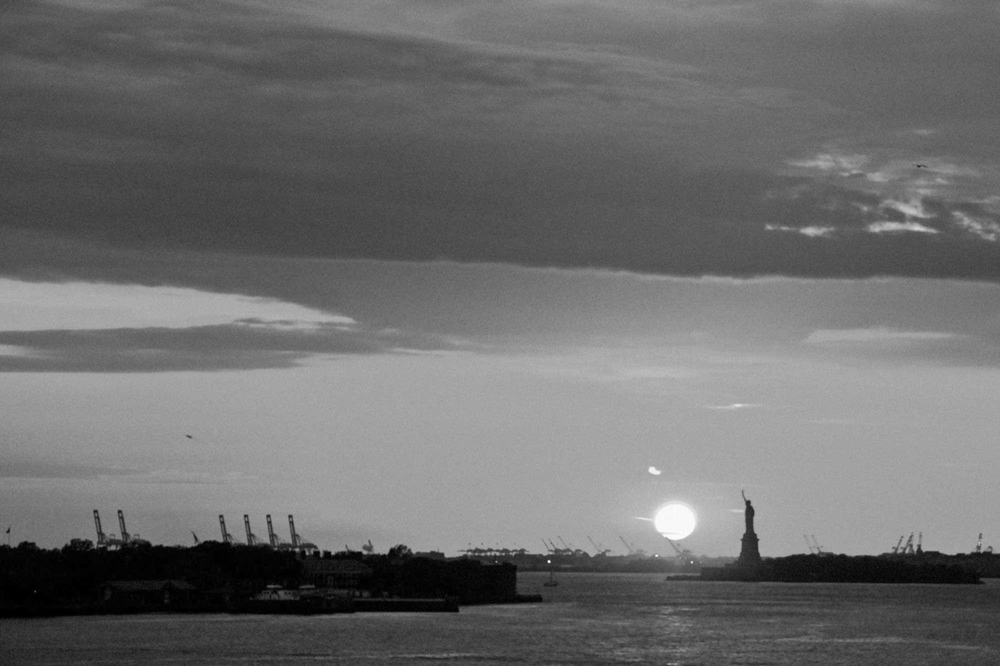
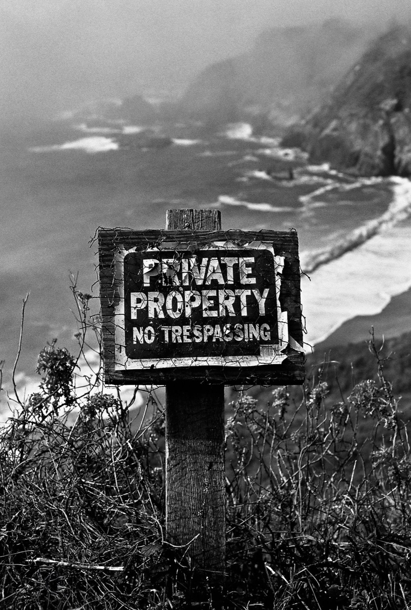
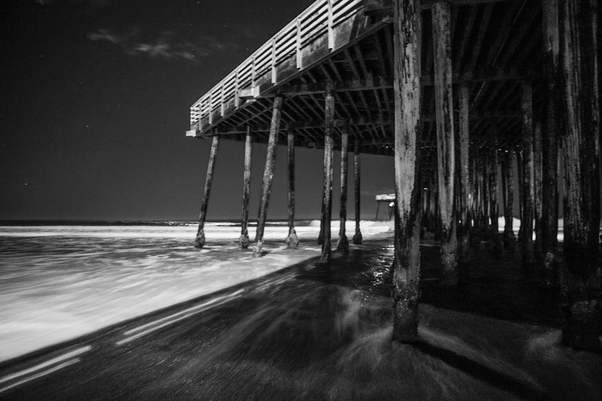
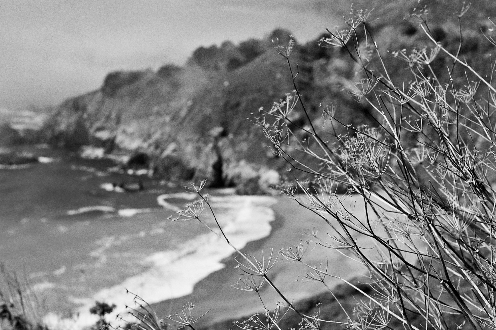

The streets are in endless motion, even when it appears still. Steel and shadow trade places. Light breaks across glass and concrete. A brief misstep becomes instruction, and the city continues forward, indifferent, precise, and unclaimed.







